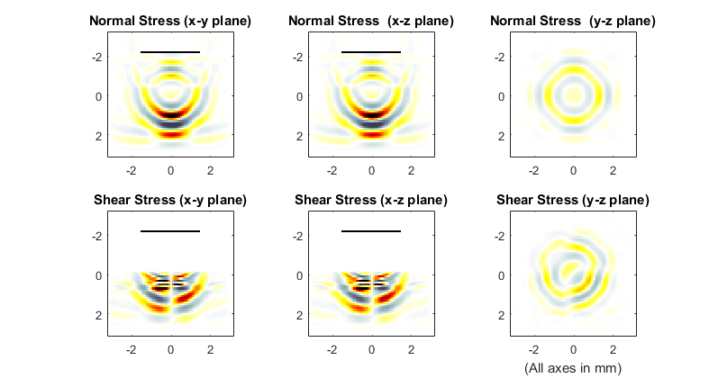

Simulations In Three Dimensions Example
This example provides a simple demonstration of using k-Wave to model elastic waves in a three-dimensional heterogeneous propagation medium. It builds on the Explosive Source In A Layered Medium and Simulations In Three-Dimensions examples.
Contents
Running the simulation
Simulations in three-dimensions are performed in an analogous fashion to those in two dimensions. In this example, a focused velocity source from a rectangular piston is incident on a layered medium. The sensor mask is defined as a set of cuboid corners that covers the central x-y plane.
% define sensor mask in x-y plane using cuboid corners, where a rectangular
% mask is defined using the xyz coordinates of two opposing corners in the
% form [x1, y1, z1, x2, y2, z2].'
sensor.mask = [1 + PML_size, 1 + PML_size, Nz/2, Nx - PML_size, Ny - PML_size, Nz/2].';
To allow visualisation of the source elements within the grid, the source mask is assigned to the optional input parameter 'DisplayMask'. This mask is overlaid onto the plot during the simulation. The optional input 'DataCast' is set to 'single' to reduce the computation time, and the 'PlotScale' input is used to define suitable plot limits for the display of the normal and shear stress.
% define input arguments input_args = {'PlotScale', [-2, 2, -0.1, 0.1], 'DataCast', 'single',... 'PMLSize', PML_size, 'DisplayMask', source.u_mask}; % run the simulation with PML inside sensor_data = pstdElastic3D(kgrid, medium, source, sensor, input_args{:});
A snapshot of the wavefield during the simulation is given below.
